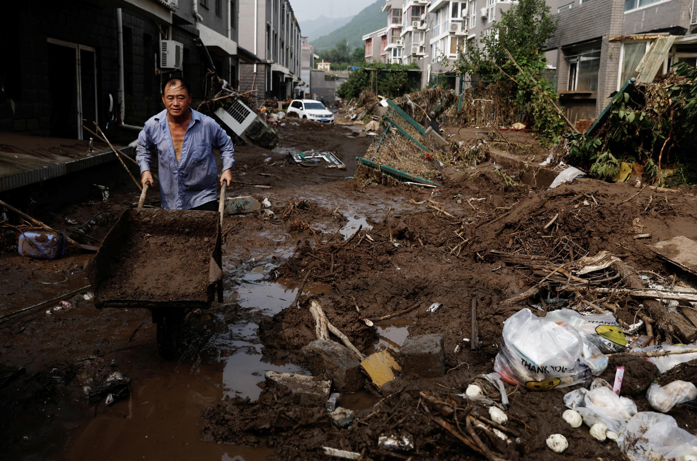
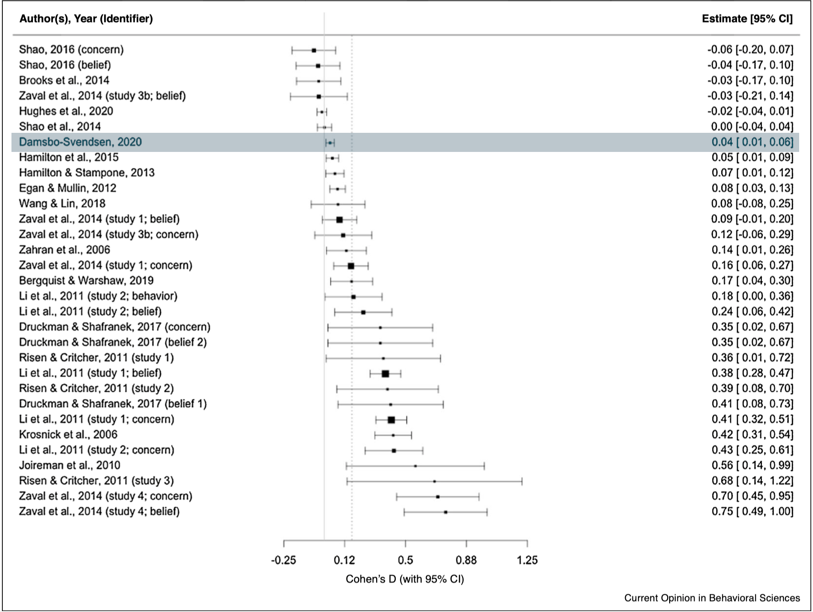
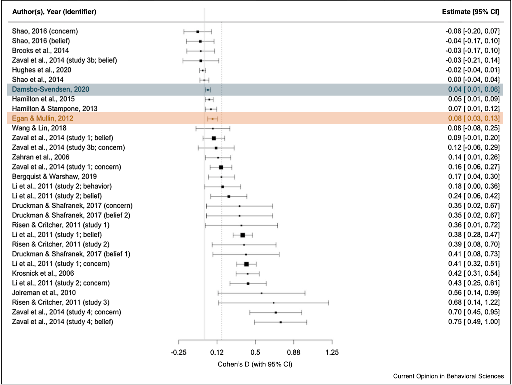

Political Weather:
How experiencing climate change shapes our political lives
PhD Defense
January 9, 2024
Instead
This is easier to understand: Personal experience with climate change and extreme weather.


Patrick T Fallon/AFP/Getty Images, Jennifer Gauthier/Reuters, Oli Scarff/AFP/Getty Images Rhein-Erft-Kreis/Cologne District Government/AP Photo, Hakan Mosvold Larsen, EPA Photo
Climate change creates more extreme weather experiences



Go Nakamura/The New York Times, Anadolu Agency/Ritzau Scanpix, Tingshu Wang, Jacob Ehrbahn
The model


Climate change’s rapid rise in 2019

Media coverage


Who is receptive to media climate coverage?
- Important because it shows the limits of media influence. Can they drive climate concern? Yes, but only among some.


- Education: Age 30-49
- Immigration: Age 70+, rural, men, center-right (not populist right)
Results


Effect size



- Small effect, but…
Heterogeneity


Heterogeneity

- Suggestive evidence of heterogeneity
- Not statistically significant
- Conclusion: The temperature effect affects everyone

Pro-climate voting


<Section 10.5 shows figure with similar trajectories for other treatments>
Effect

<Section 10.6 plots the sociodemographic balance of the treatment and control group>
Flooding intensity

Paper 3: Flooding – part 2
New dataset from three ingredients:
- Local candidate votes
- Local flooding cases
- Polling advice application
Does flooding increase support for pro-climate candidates?

Altinget/DR
Results


New or existing climate candidates?
Sample: 2,077 candidates running in both elections


Meta-analysis of rainfall and turnout


Election Day weather

Results

- Rainfall reduces P(voting) by 0.95 %-points per cm
- Effect size close to the simple, unweighted average (- - -)
Conclusion


Research Question: How are voters’ climate opinions and behavior shaped by media coverage of climate change and personal weather experiences?
- “Political weather” → The weather is political.
- Everyday experiences
- Public leadership, responsible use of public attention
- Climate change a self-correcting problem?
Overview
- Introduction → Section 1
- 1: Media → Section 2.1
- Summary in Section 2.10
- Supplementary material in Section 8
- 2: Temperature → Section 3.1
- Summary in Section 3.8
- Supplementary material in Section 9
- 3: Flooding → Section 4.1
- Summary in Section 4.14
- Supplementary material in Section 10
- 4: Turnout → Section 5.1
- Summary in Section 5.9
- Supplementary material in Section 11
- Conclusion → Section 6
(prev. slide) Marco Faria
Statistical evidence
Cross-lagged panel correlation

Statistical evidence
Vector autoregression model

Statistical evidence
Vector autoregression models with varying lag order

OLS model output

Storm surge timeline and map

Media coverage

Climate issue ownership

Balance

<Coefficient plot in Section 4.6>
Full sample and 2007 baseline

OLS model output

<Section 4.10 summarises the results>
Covariate balance: age, distance, and density


Non-linear weather effects